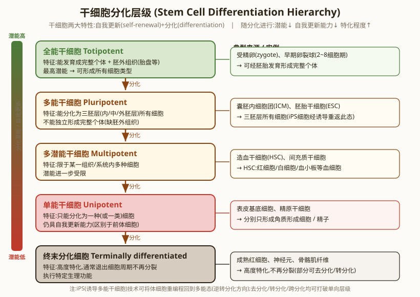
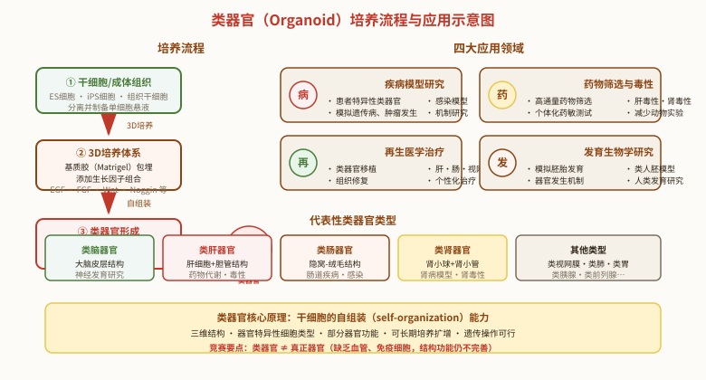

细胞生长与分化
一、细胞生长（Cell Growth）
细胞生长是细胞内含物增多、体积增大的过程。它伴随细胞分裂进行，介于两次分裂之间。
细胞生长的特点：
- ① 核酸、蛋白质等大分子物质合成增加
- ② 细胞质、内质网、线粒体、高尔基体等细胞器增多
- ③ 细胞体积增大、表面积与体积比值下降（表面积 / 体积 ↓）
- ④ 相对表面积减小限制细胞生长，所以细胞长到一定大小必须分裂
细胞大小与体积的恒定：不同物种、不同组织细胞大小差异很大（细菌 1-2 μm，卵细胞可达 100 μm，神经元轴突可长达 1 m），但同种组织的细胞大小相对恒定。
影响细胞生长的因素：① 营养供应；② 生长因子；③ 细胞密度接触抑制；④ 温度、pH 等环境条件。
二、细胞分化的基本概念
细胞分化（cell differentiation）是指同一来源的细胞逐渐发生形态结构、生理功能和蛋白质合成上的差异，形成不同类型细胞的过程。
细胞分化的六大特点：
- ① 持久性：分化一旦发生即持续终生
- ② 终生性：发生在个体发育的整个生命进程中
- ③ 单向性：分化具有方向性，不能逆转
- ④ 不可逆性：已分化的细胞一般不能回到未分化状态（少数特殊情况下可）
- ⑤ 有序性：分化受基因程序性调控
- ⑥ 可控性、稳定性：分化受内外因素精确调控
单细胞有机体的"分化"：单细胞生物（如细菌、酵母）虽只有一个细胞，但也存在"分化"——孢子形成、接合、产毒等不同状态时基因表达不同。本质是多细胞分化机制的"原始版"。
转分化（transdifferentiation）与再生：
- 转分化：一种已分化的细胞越过正常分化途径转变为另一种分化细胞的现象。如：成纤维细胞 → 脂肪细胞、横纹肌细胞
- 再生：
- 生理性再生：正常生命活动中的细胞更新（如红细胞 120 天更新、表皮 28 天更新）
- 补偿性再生：损伤后的修复（如肝脏部分切除后的再生）
- 去分化（脱分化，dedifferentiation）：已分化细胞失去特有的结构和功能，变为未分化状态。植物组织培养中常见（外植体 → 愈伤组织）
三、细胞分化的分子机制
细胞分化的本质是基因的选择性表达（differential gene expression）。
已分化的细胞含有相同的基因组，但不同细胞表达的基因集不同。例如，胰岛 β 细胞表达胰岛素基因，肝细胞表达白蛋白基因，二者基因都存在但表达谱不同。
基因表达调控的层次：DNA 水平 → 转录水平 → RNA 加工 → 翻译 → 翻译后修饰。其中转录水平的调控是细胞分化中最重要的。
两类关键基因：
- ① 管家基因（housekeeping gene）：所有细胞中都表达的基因，编码维持细胞基本生命活动所需的蛋白质（如糖酵解酶、核糖体蛋白、组蛋白）。其表达不受时空限制
- ② 组织特异性基因（tissue-specific gene）/ 奢侈基因（luxury gene）：只在特定类型细胞中表达的基因，编码细胞特异的蛋白质（如胰岛素基因只在胰岛 β 细胞表达）
组合调控（combinatorial control）：一个基因的表达受多个转录因子的组合调控。不同的转录因子组合产生不同的基因表达模式，从而形成不同的细胞类型。
细胞分化的时空特异性：
- 时间特异性（temporal specificity）：同一基因在不同发育阶段表达不同（如胚胎期和成体的血红蛋白类型不同：胚胎 εγ，胎儿 αγ，成体 αβ）
- 空间特异性（spatial specificity）：同一基因在不同组织/细胞表达不同（如胰岛素基因只在胰岛 β 细胞表达）
母体非活性 mRNA（maternal mRNA）：卵细胞中储存的、由母体合成的 mRNA。在受精后才被翻译，控制早期胚胎发育（如爪蟾 Vg1、Bicoid 蛋白）。
四、细胞全能性（Totipotency）
细胞全能性是指已经分化的细胞，仍然具有发育成完整个体的潜能。
细胞全能性的科学基础：植物细胞全能性最早由 Haberlandt 提出（1902）；动物细胞全能性被体细胞核移植实验证明。
（一）植物细胞的全能性：
- 已分化的植物体细胞在适宜条件下可脱分化形成愈伤组织，再分化形成完整植株（如胡萝卜韧皮部 → 完整胡萝卜植株）
- 原因：植物细胞壁不坚硬、液泡化程度低、染色质状态可塑
- 应用：植物组织培养（兰花、马铃薯、葡萄等）
（二）动物细胞的全能性：
- ① 人和高等动物：体细胞全能性受严格限制。受精卵是全能性最高的细胞，卵裂球（4-8 细胞期以前）保持全能性，16 细胞后逐渐丧失
- ② 已分化的植物体细胞：可脱分化 → 愈伤组织 → 完整植株
- ③ 低等动物和少数植物：体细胞全能性较强（如涡虫、水螅、喇叭虫、伞藻）
细胞全能性的三个层次：
- 全能性（totipotent）：能分化形成完整个体。受精卵、卵裂早期细胞
- 多能性（pluripotent）：能分化形成多种细胞类型但不能形成完整个体。ES 细胞、iPS 细胞
- 单能性（unipotent）：只能分化形成一种细胞类型。如精原细胞 → 精子
（三）细胞核全能性：
体细胞核移植实验证明，分化细胞的细胞核仍保留全套基因组，具有发育成完整个体的能力——这就是"细胞核全能性"。
1. 蛙的核移植实验（Briggs & King 1952，John Gurdon 1962 改进）：
- 紫外线破坏蛙卵细胞核
- 将蝌蚪肠上皮细胞核移植到去核卵中
- 重组卵发育为 8 细胞胚胎 → 蝌蚪 → 蛙
- 证明已分化的体细胞核仍具有全能性
2. 克隆羊多莉的诞生（Wilmut 1996）：
- 母羊 A（芬兰多塞特白脸羊）：提供乳腺细胞核（供核）
- 母羊 B（苏格兰黑脸羊）：提供去核卵细胞（供卵）
- 母羊 C（另一只羊）：代孕母亲（surrogate）
- 核移植 + 电融合 → 重组卵 → 早期胚胎 → 胚胎移植到代孕母羊 C → 产下多莉（Dolly）
- 多莉基因组与母羊 A 完全相同（核 DNA），mtDNA 来自母羊 B
- 这是第一个由体细胞核移植产生的哺乳动物，证明高度分化的哺乳动物体细胞核仍具有全能性
3. 细胞核全能性的原因：
- 已分化细胞核含有发育成完整个体所需的全套基因（基因组不变）
- 分化是基因的选择性表达，不是基因的丢失
- 每个分化的细胞核都含有完整的核基因组、线粒体基因组（mtDNA 来自卵细胞，所以不是真正的"全套"）
注意："细胞核全能性"≠"细胞全能性"。核移植需要卵细胞质的重新编程（reprogramming），完全去分化并表达全能性程序——这正是诱导多能干细胞（iPS）技术的核心思路。
4. 内细胞团（ICM）和滋养层：早期胚胎（胚泡）分为：
- 内细胞团（inner cell mass, ICM）：将来发育为胎儿（具有多能性）
- 滋养层（trophoblast）：将来发育为胎盘（已分化为支持细胞）
ES 细胞（embryonic stem cells）来源于内细胞团。
（四）细胞分化与细胞全能性、核全能性的关系：
- ① 分化是基因的选择性表达，基因（核）不变
- ② 已分化的细胞在合适条件下可去分化 → 恢复全能性或多能性（如植物组织培养、动物核移植、iPS）
- ③ 终末分化细胞（如神经元、肌细胞）不能去分化，但细胞核可能仍具全能性（核移植可证）
- ④ 全能性是多细胞生物体所有细胞的"潜在"能力，但绝大多数细胞在自然状态下不能表达
五、干细胞（Stem Cells, SC）
干细胞（stem cell）是一类具有自我更新（self-renewal）和多向分化潜能（multipotency）的未分化细胞。

干细胞的分类（按分化潜能）：
- 全能干细胞（totipotent stem cell）：能分化形成完整个体，包括胚外组织。受精卵、卵裂球
- 多能干细胞（pluripotent stem cell）：能分化形成 3 个胚层所有类型的细胞，但不能形成完整个体。胚胎干细胞（ES）、EG 细胞、iPS 细胞
- 单能干细胞（unipotent stem cell）/ 专能干细胞：只能分化形成一种细胞类型。如精原干细胞、肌卫星细胞
干细胞的分裂方式：
- 非对称分裂（asymmetric division）：一次分裂产生 1 个干细胞 + 1 个分化祖细胞。是干细胞维持自我更新的关键机制
- 对称分裂（symmetric division）：一次分裂产生 2 个干细胞（扩增）或 2 个分化细胞（消耗）
过渡放大细胞（transit amplifying cell, TAC）：介于干细胞和终末分化细胞之间，能快速有限次数地分裂，最终分化为终末细胞。作用：扩大干细胞分化产物的数量。
胚胎干细胞（ES 细胞）的来源：
- 来自胚泡内细胞团（ICM）
- 具多能性：能分化形成 3 个胚层（外胚层、中胚层、内胚层）所有类型的细胞
- 不能在体外独立发育成个体（缺乏胚外组织形成能力）
EG 细胞（embryonic germ cells）：来自胚胎生殖嵴中的原始生殖细胞，类似 ES 细胞的多能性。
成体干细胞（adult stem cell）/ 组织干细胞：存在于已分化组织中，能自我更新和分化为所在组织的特异细胞类型：
- 造血干细胞（hematopoietic stem cell, HSC）：骨髓中 → 红细胞、白细胞、血小板
- 间充质干细胞（mesenchymal stem cell, MSC）：骨髓中 → 骨、软骨、脂肪、肌细胞
- 神经干细胞（neural stem cell）：脑室下区 → 神经元、星形胶质细胞、少突胶质细胞
- 肠上皮干细胞：肠隐窝 → 吸收细胞、杯状细胞、内分泌细胞
- 表皮干细胞：基底层 → 角质形成细胞
- 视网膜干细胞、肌卫星细胞（muscle satellite cell）、精原干细胞、肝卵圆细胞等
诱导多能干细胞（iPS cells, induced pluripotent stem cells）：
- 2006 年日本科学家 Yamanaka（山中伸弥） 通过转入 4 个转录因子（Oct4、Sox2、c-Myc、Klf4）将小鼠成纤维细胞重编程为多能干细胞
- 2012 年获诺贝尔生理学或医学奖
- 意义：避免了胚胎干细胞研究的伦理问题，可从患者体细胞获得个体特异性多能干细胞
- 应用：疾病模型、药物筛选、个体化治疗、器官移植
六、类器官（Organoid）

类器官（organoid）是在体外三维培养条件下，由干细胞自组装形成的具有器官特征的微型器官。类器官技术是干细胞研究和再生医学领域的重大突破。
（一）定义与原理：
- 定义：体外培养的具有三维结构、包含多种器官特异性细胞类型、模拟器官部分功能的微型器官
- 核心原理：干细胞的自组装（self-organization）能力——干细胞在适宜的三维环境中能自发分化并组织成类似器官的结构
- 类器官不是真正的器官（缺乏血管系统、免疫系统、神经支配等），但能重现器官的关键结构和功能
- 2009 年荷兰 Hubrecht 研究所的 Clevers 实验室首次成功培养出类肠器官，开创类器官研究领域
（二）培养方法：
- ① 细胞来源：
- 多能干细胞（ES 细胞、iPS 细胞）→ 可分化形成各种类器官
- 成体干细胞（组织干细胞）→ 形成对应组织的类器官
- 直接从患者组织分离的细胞 → 患者特异性类器官
- ② 三维培养体系：
- 基质胶（Matrigel）：从小鼠肉瘤中提取的细胞外基质，含层粘连蛋白、胶原蛋白、生长因子等，提供三维支架
- 其他：胶原凝胶、海藻酸钠、合成水凝胶等
- ③ 生长因子组合：根据目标器官类型添加不同生长因子组合（如 EGF、FGF、Wnt、Noggin、R-spondin 等），引导干细胞定向分化和自组装
- ④ 培养条件：37°C、5% CO₂、适当的培养基和培养时间
（三）代表性类器官类型：
| 类器官类型 | 细胞来源 | 主要结构特征 | 主要应用 |
|---|---|---|---|
| 类脑器官 | ES/iPS 细胞 | 大脑皮层分层结构、神经元、神经胶质细胞 | 神经发育研究、脑疾病模型（小头畸形、阿尔茨海默病） |
| 类肠器官 | 肠隐窝干细胞 / iPS | 隐窝-绒毛结构、吸收细胞、杯状细胞、内分泌细胞 | 肠道疾病、感染模型（诺如病毒、新冠）、药物吸收 |
| 类肝器官 | iPS / 肝干细胞 | 肝细胞、胆管样结构 | 药物代谢与毒性测试、肝病模型、肝再生研究 |
| 类肾器官 | iPS / 肾干细胞 | 肾小球样结构、肾小管样结构 | 肾病模型、肾毒性测试、遗传性肾病研究 |
| 类视网膜 | ES/iPS 细胞 | 视杯结构、感光细胞 | 视网膜疾病、视网膜移植研究 |
| 类胃/类肺/类胰腺 | ES/iPS 细胞 | 对应器官的特征结构 | 各器官的发育与疾病研究 |
（四）四大应用领域：
- 疾病模型：
- 利用患者 iPS 细胞建立患者特异性类器官，研究疾病发生机制
- 遗传病模型（如囊性纤维化、多囊肾）、感染病模型（如新冠类肺器官）、肿瘤类器官
- 药物筛选与毒性测试：
- 高通量药物筛选，发现新药
- 个体化药敏测试：用患者肿瘤类器官筛选最佳化疗方案
- 肝毒性、肾毒性、心脏毒性测试，减少动物实验
- 再生医学：
- 类器官移植修复受损组织器官（如类肝器官治疗肝衰竭）
- 与基因编辑结合，矫正遗传缺陷后再移植
- 发育生物学研究：
- 模拟人类胚胎发育和器官发生过程
- 研究人类早期发育机制（难以在体内研究）
- 类人胚模型（胚状体）研究早期胚胎发育
（五）优势与局限性：
| 优势 | 局限性 |
|---|---|
| 三维结构，更接近体内真实器官 | 缺乏血管系统（营养供应受限，体积有限） |
| 可获得患者特异性模型（精准医学） | 缺乏免疫细胞、神经支配 |
| 可长期培养、冻存、扩增 | 个体差异大，标准化程度低 |
| 可进行基因编辑（CRISPR/Cas9） | 结构和功能仍不完善 |
| 减少动物实验，伦理问题相对较少 | 成本较高，技术要求高 |
| 可高通量筛选药物 | 类脑器官的意识/伦理争议 |
七、影响细胞分化的因素
（一）胞内因素：
- ① 细胞质不均等分配：卵裂时细胞质中的母体 mRNA、调控蛋白不均等地进入两个子细胞，导致两个子细胞命运不同。这是马蛔虫染色体消减现象的基础（体细胞染色体片段丢失）
- ② 核基因的选择性表达：转录因子组合调控是核心机制
- ③ 基因重排（gene rearrangement）：B 淋巴细胞分化中，抗体基因（V、D、J、C 区）发生 DNA 重排，产生不同抗体。这种"基因重排"是个别分化现象，不是普遍规律
（二）胞外因素：
- ① 细胞-细胞相互作用：
- 胚胎诱导（embryonic induction）：一个细胞群对相邻细胞群的分化产生影响。经典案例：Spemann 移植实验（背唇诱导外胚层形成神经组织）
- 旁分泌（paracrine）：邻近细胞分泌的信号分子（如生长因子、细胞因子）
- 细胞-基质相互作用：细胞外基质提供位置信息和分化信号
- ② 细胞信号分子：如激素、细胞因子、生长因子（如 EGF、FGF、PDGF、TGF-β）
- ③ 位置效应（positional information）：细胞在胚胎中的位置决定其分化命运（如肢芽的近端-远端、背-腹轴模式）
- ④ 环境因素：温度、日照、pH 等。例如：春化作用（低温促进开花）、光周期（日照长度影响植物发育）
细胞凋亡与细胞分化的关系：
细胞凋亡是正常发育的一部分（如胚胎手指、脚趾间隙的消失、蝌蚪尾巴的消失）。细胞凋亡是程序性的、主动的细胞死亡，是细胞分化的"补充"。
第二节核心要点回顾：
- 细胞生长：体积增大、表面积/体积比↓、受接触抑制和生长因子调控
- 细胞分化：基因的选择性表达，6 大特点（持久、终生、单向、不可逆、有序、可控稳定）
- 分子机制：管家基因 vs 奢侈基因；组合调控；时空特异性
- 细胞全能性：植物 > 动物 > 高等动物。三层次：全能→多能→单能
- 细胞核全能性：核移植证明（蛙、多莉羊）。2012 年山中伸弥 iPS 细胞获诺奖
- 干细胞：自我更新 + 多向分化。ES（多能）、iPS（多能）、成体干细胞（多/单能）。非对称分裂维持自我更新
- 类器官：干细胞自组装形成三维微型器官。3D培养 + 基质胶 + 生长因子。四大应用：疾病模型、药物筛选、再生医学、发育研究
- 分化因素：胞内（细胞质不均等、基因重排）+ 胞外（胚胎诱导、信号分子、位置信息、环境）